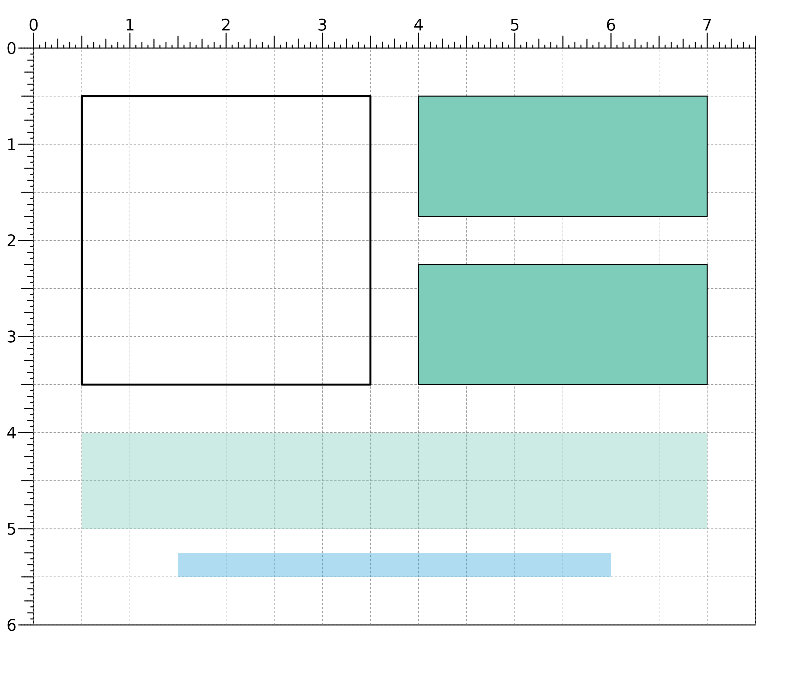

Plot a rectangle within a plotgardener layout
plotRect( x, y, width, height, just = "center", default.units = "inches", linecolor = "black", lwd = 1, lty = 1, fill = NA, alpha = 1, params = NULL, ... )
| x | A numeric vector or unit object specifying rectangle x-locations. |
|---|---|
| y | A numeric vector, unit object, or a character vector of values containing a "b" combined with a numeric value specifying rectangle y-locations. The character vector will place rectangle y-locations relative to the bottom of the most recently plotted plot according to the units of the plotgardener page. |
| width | A numeric vector or unit object specifying rectangle widths. |
| height | A numeric vector or unit object specifying rectangle heights. |
| just | Justification of rectangle relative to its (x, y) location.
If there are two values, the first value specifies horizontal justification
and the second value specifies vertical justification.
Possible string values are: |
| default.units | A string indicating the default units to use if
|
| linecolor | A character value specifying rectangle line color.
Default value is |
| lwd | A numeric specifying rectangle line width.
Default value is |
| lty | A numeric specifying rectangle line type.
Default value is |
| fill | A character value specifying rectangle fill color.
Default value is |
| alpha | Numeric value specifying color transparency.
Default value is |
| params | An optional pgParams object containing relevant function parameters. |
| ... | Additional grid graphical parameters. See gpar. |
Returns a rect object containing
relevant placement and grob information.
## Plot one rectangle with no fill plotRect( x = 0.5, y = 0.5, width = 3, height = 3, just = c("left", "top"), default.units = "inches", lwd = 2, fill = NA )#>## Plot two rectangles with same width and height at different locations plotRect( x = 4, y = c(0.5, 2.25), width = 3, height = 1.25, just = c("left", "top"), default.units = "inches", fill = "#7ecdbb" )#>## Plot two rectangles with different widths, heights, ## locations, and colors plotRect( x = 3.75, y = c(4, 5.25), width = c(6.5, 4.5), height = c(1, 0.25), just = "top", default.units = "inches", fill = c("#7ecdbb", "#37a7db"), linecolor = NA, alpha = 0.4 )#>